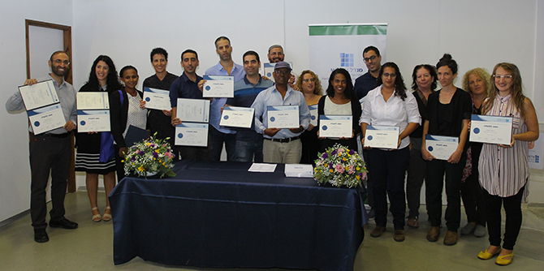

On October 17 2017, the Mandel Center for Leadership in the North celebrated the graduation of the Mandel Local Leadership Program in Afula. The festive ceremony was attended by Afula Mayor Yitzhak Meron; Mr. Moshe Vigdor, director general of the Mandel Foundation-Israel; and Ayelet Ilani and Dalit Caspin, the co-directors of the program, as well as the program's graduates and their friends and relatives.
During the program’s two years of intensive study, the fellows explored social and philosophical issues, and matters of leadership and public policy. They underwent a process of personal and professional development that contributed to their development as leaders who are equipped with the necessary tools for implementing their vision.
Mr. Moshe Vigdor, director general of the Mandel Foundation-Israel, thanked the municipality of Afula for its cooperation, congratulated the graduating fellow on their graduation, and wished the graduates a successful and productive future. Afula Mayor Yitzhak Meron expressed his confidence in the future work of the graduates, and called on them to raise the gauntlet and take up the challenge of establishing an incubator for social entrepreneurship in the city.

{kind=link}